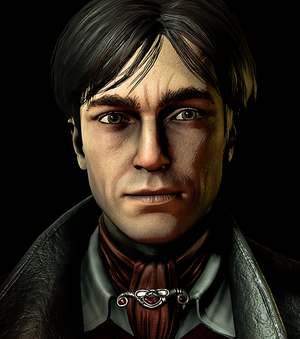
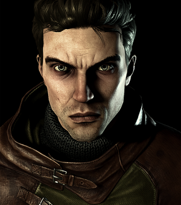
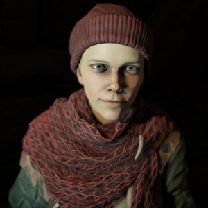

STORY
Pathologic follows the efforts of three doctors when a deadly plague hits a small village in the Russian steppe.
Each character has a different perspective as a result of their experiences during the epidemic.
These different perspectives lead the characters to find radically different solutions to ending the pandemic.
| Lead Characters | ||
|---|---|---|
|  |
- The Bachelor -
Daniil Dankovsky, a Bachelor of Medicine, is researching ways to forestall and overcome death. His research has not been fruitful, but when he receives a letter speaking of a seemingly immortal man in a small village in the Russian steppe, he takes the first train he can to speak to and study this man. |
|
|  |
- The Haruspex -
Artemy Burahk is a man who grew up in the Town-on-Gorkon. He left home years ago in order to study to become a surgeon at the capital. But when he receives word that his father is dying, he returns home. |
|
|  |
- The Changeling -
Clara the Changeling is an enigmatic figure. She has no past. She merely awoke in an open grave, birthed by the earth. She has powers beyond ordinary humans and knowledge that she could not possibly have. |
|